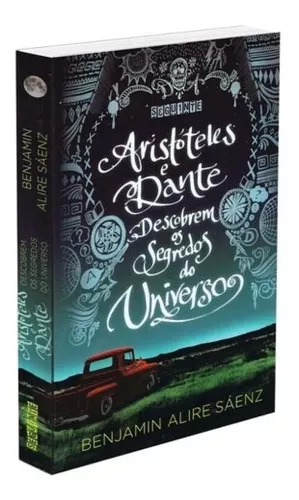

Aristóteles e Dante
Em um verão tedioso, os jovens Aristóteles e Dante são unidos pelo acaso e, embora sejam completamente diferentes um do outro, iniciam uma amizade do tipo que muda a vida das pessoas e dura para sempre. E é através dessa amizade que Ari e Dante vão descobrir mais sobre si mesmos. Dante é articulado e confiante. Ari tem dificuldade com palavras e duvida de si. Dante é apaixonado por poesia e arte. Ari se perde em pensamentos sobre seu irmão mais velho, que está na prisão.